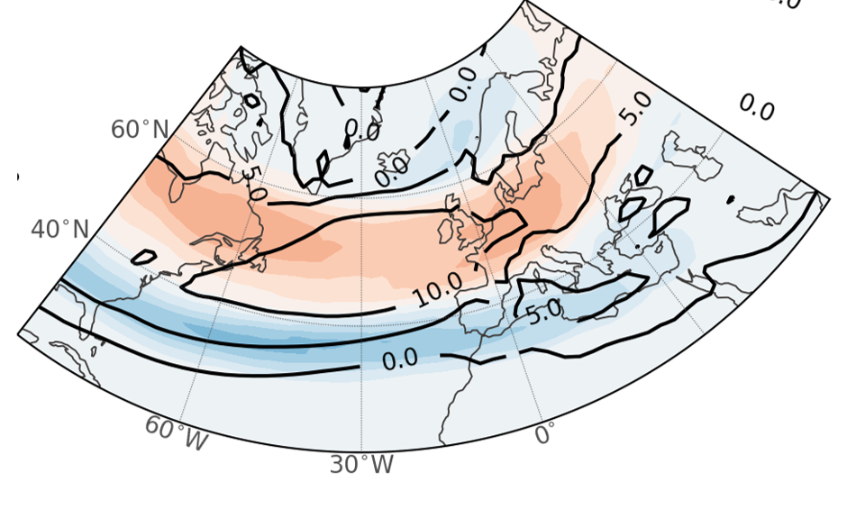
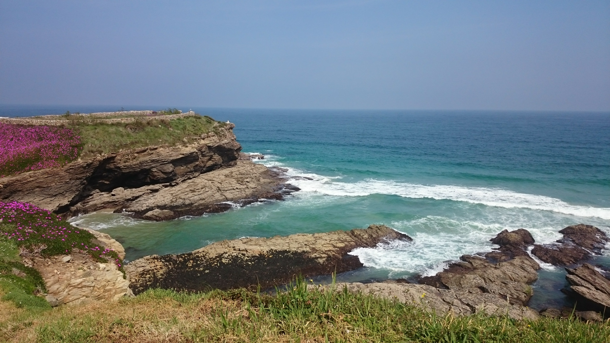

Why NAE?
Regional Impacts and Dynamics
1. Connecting weather patterns and extremes
This region experiences significant climate variability, such as the North Atlantic Oscillation (NAO) and the Atlantic Meridional Overturning Circulation (AMOC). These phenomena influence temperature, precipitation, storm patterns, and droughts, which are essential for understanding the potential for extreme weather events like heatwaves, flooding, and cold spells.
Studying these patterns helps predict how such extreme events will evolve with climate change.

Impacts on Ecosystems and Biodiversity
The North Atlantic European region is home to diverse ecosystems and marine life. Climate variability affects marine currents, sea surface temperatures, and nutrient availability, which in turn impact the biodiversity of fish, plankton, and other marine organisms. This can disrupt food chains and influence both marine and terrestrial ecosystems.
Land-based ecosystems, including agriculture and forestry, are also vulnerable to changes in temperature, rainfall, and storm patterns.
Agricultural and Economic Impacts
Changes in climate variability directly affect agricultural productivity. Shifts in growing seasons, temperature fluctuations, and altered precipitation patterns can either boost or harm crop yields. This has economic consequences for food production, supply chains, and local economies.
The North Atlantic region is home to countries with strong fishing industries, so changes in sea temperatures and currents can affect fish stocks, further impacting the economy.
Coastal and Marine Impacts
The region’s coastline is vulnerable to rising sea levels and changing storm intensities. Understanding the regional climate variability allows scientists to better predict potential flooding and erosion risks.
Sea-level rise is particularly relevant for low-lying areas and islands in the North Atlantic, making climate investigation crucial for planning infrastructure resilience.
Climate Change Adaptation and Mitigation
By understanding natural variability in climate patterns and how they might change in response to human-induced climate change, policymakers can develop strategies to mitigate negative effects.
Such research can guide urban planning, disaster preparedness, and the development of renewable energy sources, which may be influenced by changing wind, wave, and solar patterns in the region.
Feedback Mechanisms and Global Climate
The North Atlantic plays a significant role in global climate systems. The variability of ocean currents, particularly the Gulf Stream, has a large influence on global weather patterns. Understanding this variability is key to predicting how shifts in this region might affect the broader global climate system.
The region’s climate is also linked to large-scale phenomena such as El Niño, which may have indirect impacts on weather across the globe.
Public Health Implications
Climate variability influences the spread of diseases, particularly vector-borne diseases, as changing temperatures affect the life cycle of insects. Warmer or wetter conditions could increase the prevalence of diseases like Lyme disease or even tropical diseases if they reach new areas.
More extreme weather conditions, like heatwaves and cold spells, can strain health services, increase mortality rates, and exacerbate pre-existing health problems.
Policy and International Collaboration
Climate variability and change in the North Atlantic European region often require transnational cooperation, as weather and ocean patterns do not respect borders. Understanding this variability is important for joint international efforts in climate change mitigation, resource management, and disaster response.
The region’s strong reliance on international trade, particularly maritime trade, means that any climate-induced disruptions could have wide-reaching impacts on the global economy.
A Personal Connection
Finally, and very importantly, because I am from Galicia, the Northwesternmost region on the Iberian Peninsula, highly exposed to storm tracks and North Atlantic variability. It is therefore a place of constant change, with storms and varying weather patterns influenced by the Atlantic weather systems.
